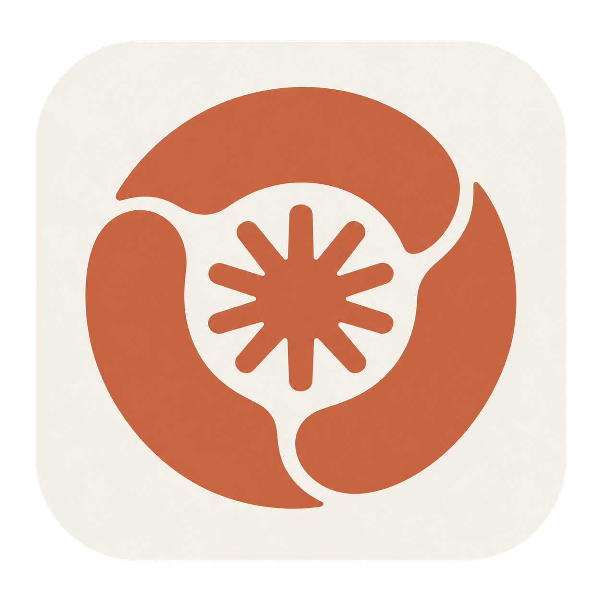

CLAUDE CODE GUARD
Claude 環境檢查
確認目前桌面環境，再開啟 Claude。
正在檢查
請稍候完成所有必要檢查。
桌面防護
出口查詢使用 Cloudflare、ipwho.is 及 ProxyCheck。WebRTC 與指紋尚未在官方桌面 App 內量測；檢查結果不能保證帳戶安全或服務可用性。

CLAUDE CODE GUARD
確認目前桌面環境，再開啟 Claude。
正在檢查
請稍候完成所有必要檢查。
出口查詢使用 Cloudflare、ipwho.is 及 ProxyCheck。WebRTC 與指紋尚未在官方桌面 App 內量測；檢查結果不能保證帳戶安全或服務可用性。